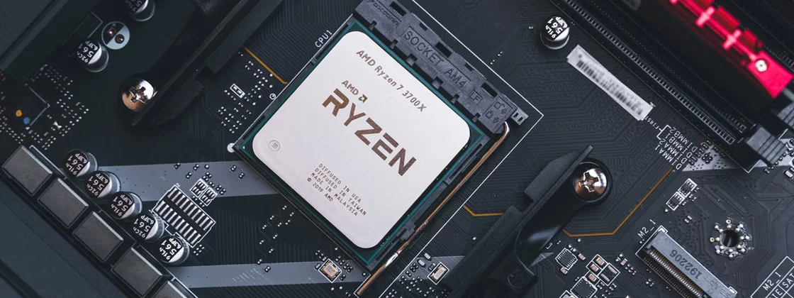
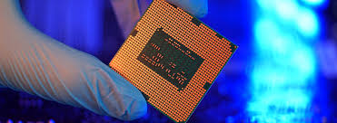

A AMD é líder em computação adaptável e de alto desempenho, proporcionando produtos e serviços que ajudam a resolver os desafios mais importantes do mundo. Nossas tecnologias avançam no futuro dos mercados de data center, incorporados, jogos e PCs.
Fundada em 1969 como uma start-up do Vale do Silício, a jornada da AMD começou com dezenas de funcionários apaixonados por criar produtos de semicondutores de ponta. A AMD se tornou uma empresa global que define o padrão para a computação moderna, com muitos importantes avanços tecnológicos e inovações importantes no setor ao longo do caminho.
Nossa equipe executiva continua a construir uma cultura de excelência de execução e inclusão de diversas perspectivas, ao mesmo tempo em que ultrapassa os limites da inovação.
A AMD tem o compromisso de incorporar a responsabilidade corporativa em nossas cadeias de valor e nas comunidades onde vivemos e trabalhamos.
